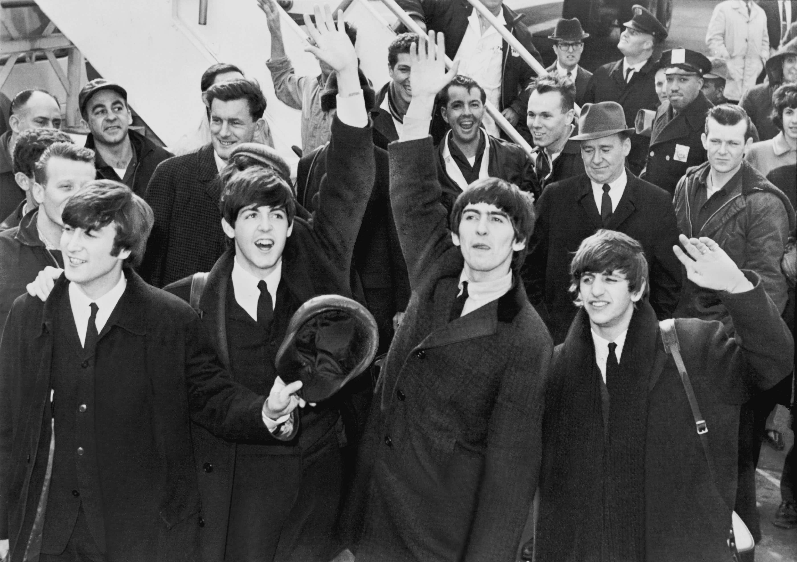

Todo comenzó en Liverpool, Inglaterra. John Lennon, Paul McCartney, George Harrison y Ringo Starr formaron el grupo que cambiaría la música para siempre. Sus primeros años tocaron en The Cavern Club y en clubs de Hamburgo, Alemania.
En 1962, lanzaron su primer sencillo "Love Me Do". Rápidamente ganaron popularidad en el Reino Unido y luego en Estados Unidos con su aparición en The Ed Sullivan Show en 1964, marcando el inicio de la "Beatlemanía".
Desde 1965, los Beatles continuaron innovando. Su música se volvió más compleja y experimental, y su impacto en la cultura popular fue aún mayor.Álbumes como Rubber Soul, Revolver y el monumental Sgt. Pepper's Lonely Hearts Club Band redefinieron lo que podía ser un disco de rock.
A pesar de su éxito, las tensiones internas y las diferencias creativas llevaron a la disolución de la banda en 1970. Abbey Road fue su último gran triunfo conjunto, sin embargo, su legado musical sigue vivo, inspirando a generaciones de músicos y fans en todo el mundo.
